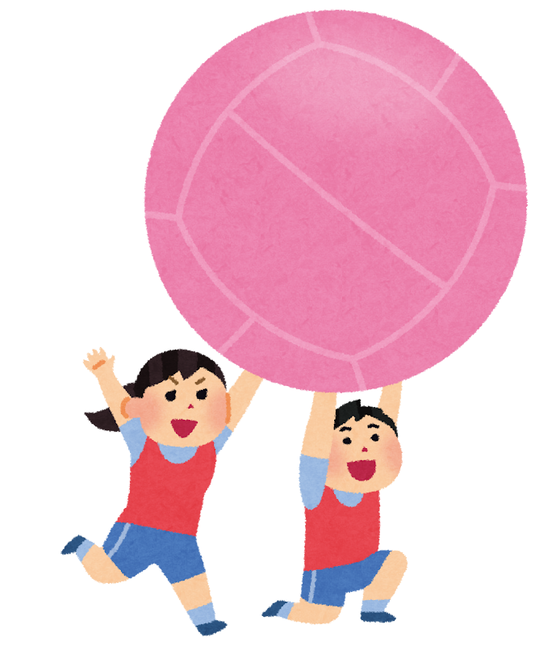

キンボールは1986年、カナダのケベック州で生まれました。
考案したのは、体育教師のマリオ・ドゥマース氏です。
当時、若者たちの無気力さや無関心さに危機感を持っていた彼は、
「スポーツを通じて感動を共有し、協調性を高めてほしい」という願いを込めて、試行錯誤の末にこの協議を作り出しました。
その教育的なアプローチから、アメリカでは5,000校以上の学校で採用。
現在では日本やヨーロッパなど世界中で広がり、500万人以上が楽しむスポーツへと発展しています。